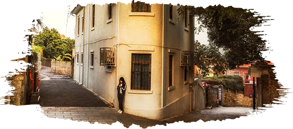
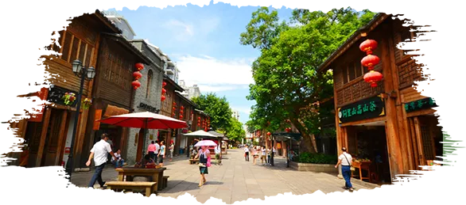

— 出发,遇见江西 —
Set out to meet Fujian
南昌
烟波浩淼的鄱阳湖滨、奔腾不息的赣江之畔、
纵横南北的京九线上，镶嵌着一颗璀璨的明珠—南昌。


抚州
抚州风光如画，生态环境纯净清新，是国家生态文明先进示范市、
国家生态产品价值实现机制试点单位；抚州是一首动人的诗。
涌现了王安石、曾巩、晏殊、晏几道、陆九渊、汤显祖等一大批名儒巨公。
赣州
赣州人文历史厚重，距今有2200多年的历史，是中国优秀旅游城市、
国家历史文化名城、国家园林城市、全国文明城市和国家森林城市。
赣州自然资源丰富，形成“红色故都、客家摇篮、江南宋城、阳明圣地”四大旅游品牌。

新余
仙女湖自然风光旖旎，景色秀丽，森林原始，让人沉醉不已。
整个湖泊清澈碧绿，像是一块绿宝石，镶嵌在新余的大地上。
湖面上岛屿星罗棋布，景观甚是迷人。来这里感受大自然柔美的神韵，
放松身上每个细胞。这里如仙境般的风光，让人神往。。